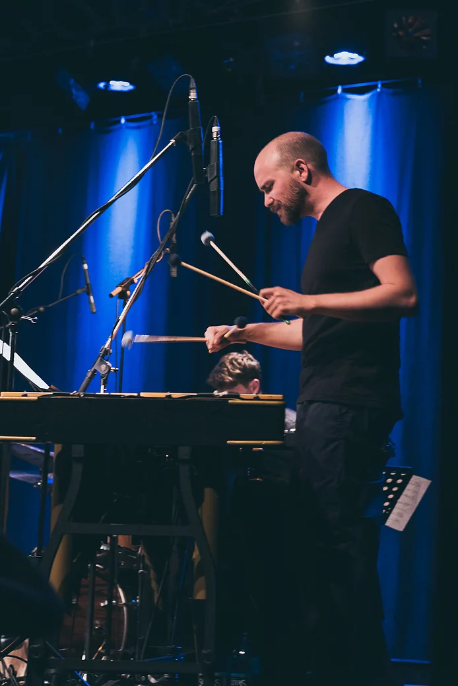

News
Konzerte
Unterricht im Raum Leipzig
Unterricht:
- Vibraphon / Marimba / Schlagzeug für Anfänger und Fortgeschrittene
- Vorbereitungskurse für Aufnahmeprüfungen
- Jazzimprovisation für alle Instrumente.
Musikrichtungen:
Jazz / Pop / Klassik Mir ist wichtig, schnell Musik zu machen und auch mit Anfängern sofort kreativ an das Instrument heranzugehen. Dabei gehe ich voll auf deine Vorlieben und Wünsche ein. Es sind sowohl wöchentlicher Unterricht als auch Einzelstunden in unregelmäßigen Abständen möglich. Eine Unterrichtseinheit dauert zwischen 30 min und 60 min. Für regelmäßigen Unterricht empfehle ich 60min. Für Berufstätige, die zwar regelmäßig kommen möchten, aber keinen festen Termin einhalten können, biete ich 10er-Karten an.Ort:
Leipzig-Großzschocher oder bei dir zu Hause.Verkehrsanbindung zu mir:
- U-Bahn: Linie 3 (Knautkleeberg)
- Auto von außerhalb: ca 5 Min zur A38
Preise auf Anfrage.
Bei Interesse oder Fragen zu den Konditionen schicke mir eine E-Mail oder ruf mich unter der +49 1577 8220214 an
Biographie

Volker Heuken, geboren 1990 in Leverkusen, startete mit sechs Jahren seine Ausbildung am Schlagzeug an der Musikschule in Leverkusen.
Mit 17 Jahren entdeckte er das Vibraphon und den Jazz für sich. Er nahm Jazz-Unterricht bei David Friedman, Matthias Goebel und Mathias Haus. Weitere Workshops ergänzten seine Ausbildung: Mathias Haus, Tony Lakatos, John Ruocco, Antonio Farao, Jim Snidero, Matt Penman, Eric Alexander.
Ab 2011 studierte er Jazz-Mallets an der HfM Nürnberg bei Roland Neffe. Er war Mitglied des Landesjugendjazzorchesters Bayern. Volker Heuken ist Preisträger des Bruno Rother Gedächtnis Wettbewerbs 2014. Er wirkte bei verschiedenen Combos und Bigbands mit, tourte durch Deutschland und spielte in zahlreichen großen Jazzclubs (Jazzstudio Nürnberg, Leerer Beutel Regensburg, BIX Stuttgart, Unterfahrt München, etc.) und war zu Gast bei einigen Jazzfestivals in Deutschland (Jazztage Leverkusen, Jazztage Mainz, Jazzfest Bonn, etc.) Zusammen mit Izabella Effenberg war er künstlerischer Leiter des deutschen Vibraphonfestivals „Vibraphonissimo“. Mit Jan F. Brill betreute er die Konzertreihe Brozzijazz ebenfalls mit künstlerischer Leitung. Er ist Mitglied des Metropolvereins Nürnberg.
Ab 2016 studierte er bei Prof. Michael Wollny Master in Komposition in Leipzig und schloss das Studium 2019 ab. 2019 erhielt er den Nachwuchsjazzpreis der Stadt Leipzig mit dem Trio Heuken/Stadtfeld/Heigenhuber und eröffnete damit die Leipziger Jazztage. In Leipzig betreute Volker Heuken ebenfalls verschiedene Jazzreihen.
Mit 17 Jahren entdeckte er das Vibraphon und den Jazz für sich. Er nahm Jazz-Unterricht bei David Friedman, Matthias Goebel und Mathias Haus. Weitere Workshops ergänzten seine Ausbildung: Mathias Haus, Tony Lakatos, John Ruocco, Antonio Farao, Jim Snidero, Matt Penman, Eric Alexander.
Ab 2011 studierte er Jazz-Mallets an der HfM Nürnberg bei Roland Neffe. Er war Mitglied des Landesjugendjazzorchesters Bayern. Volker Heuken ist Preisträger des Bruno Rother Gedächtnis Wettbewerbs 2014. Er wirkte bei verschiedenen Combos und Bigbands mit, tourte durch Deutschland und spielte in zahlreichen großen Jazzclubs (Jazzstudio Nürnberg, Leerer Beutel Regensburg, BIX Stuttgart, Unterfahrt München, etc.) und war zu Gast bei einigen Jazzfestivals in Deutschland (Jazztage Leverkusen, Jazztage Mainz, Jazzfest Bonn, etc.) Zusammen mit Izabella Effenberg war er künstlerischer Leiter des deutschen Vibraphonfestivals „Vibraphonissimo“. Mit Jan F. Brill betreute er die Konzertreihe Brozzijazz ebenfalls mit künstlerischer Leitung. Er ist Mitglied des Metropolvereins Nürnberg.
Ab 2016 studierte er bei Prof. Michael Wollny Master in Komposition in Leipzig und schloss das Studium 2019 ab. 2019 erhielt er den Nachwuchsjazzpreis der Stadt Leipzig mit dem Trio Heuken/Stadtfeld/Heigenhuber und eröffnete damit die Leipziger Jazztage. In Leipzig betreute Volker Heuken ebenfalls verschiedene Jazzreihen.

Volker Heuken
E-Mail: VolkerHeuken@web.de
Tel: +49 1577 8220214
Schick mir eine Nachricht per Whatsapp:
(Öffnet die App oder die WebApp)